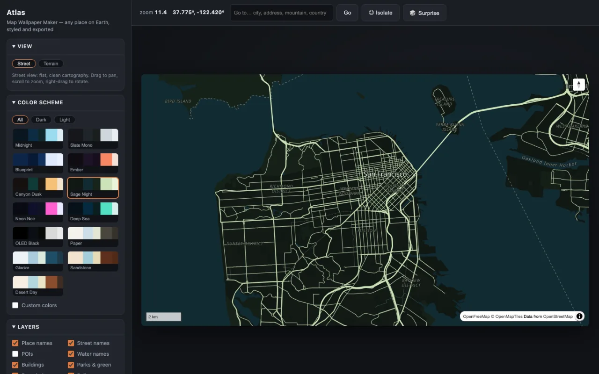
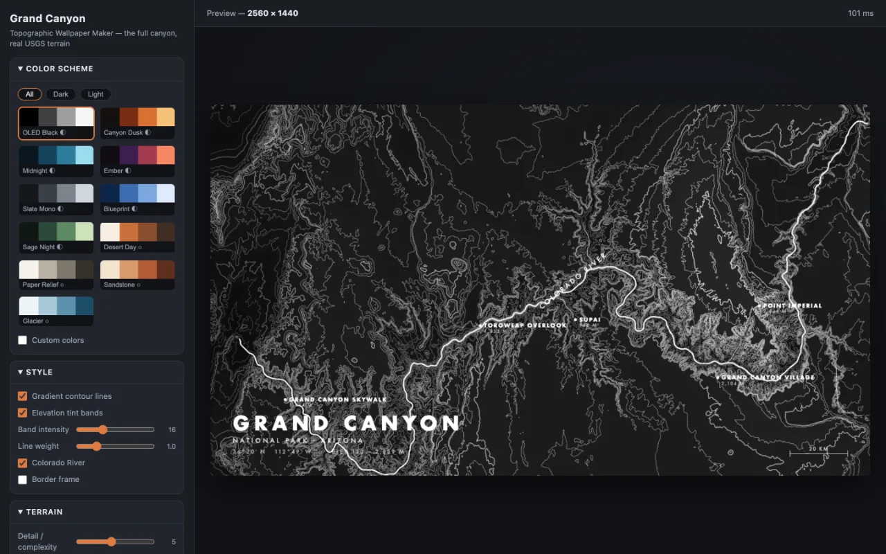
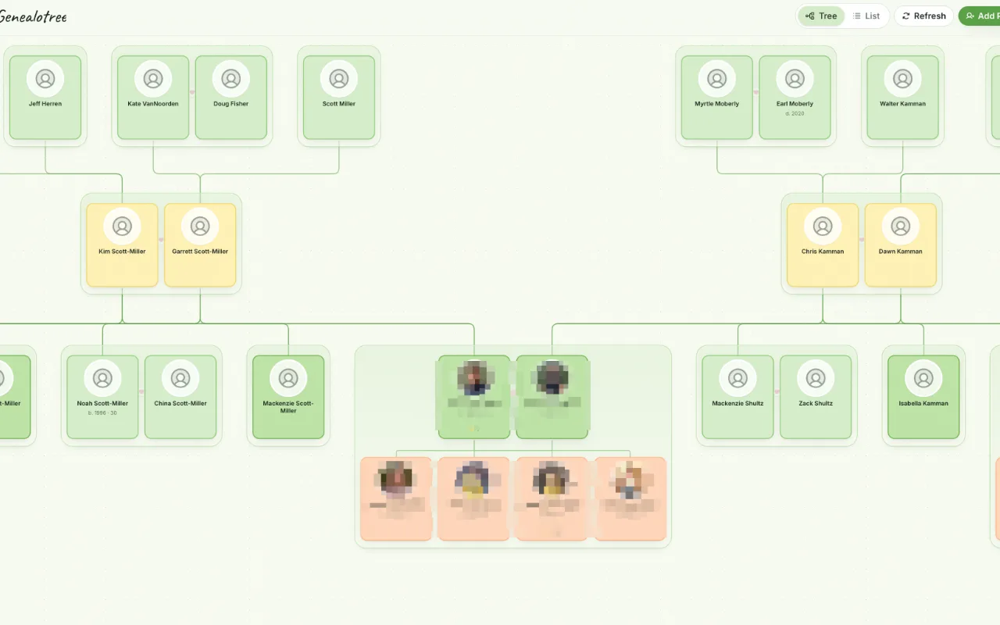
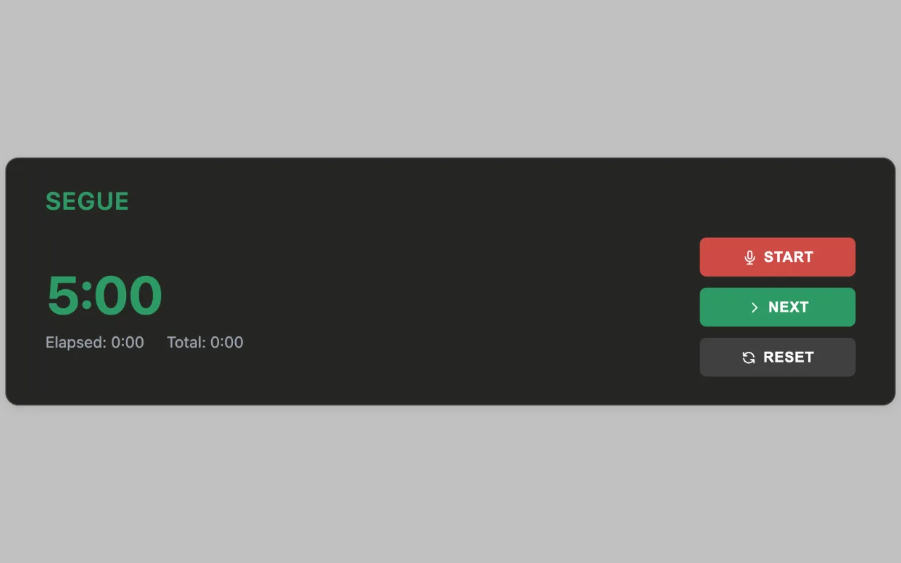
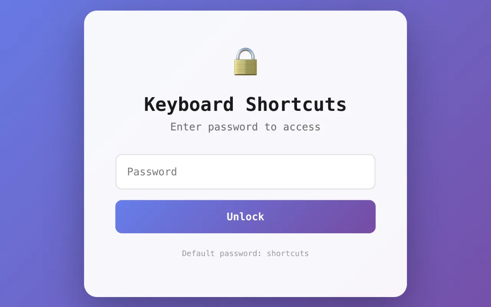
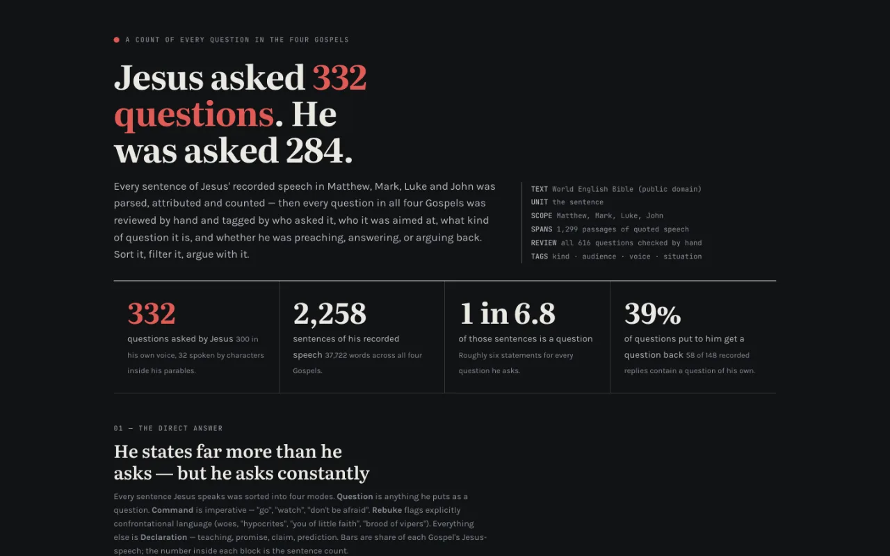

Volume One
Everything here is real and running. Click any of them.

Turn any place on Earth into a wallpaper. Styled MapLibre maps with real terrain, a shelf of colour schemes, and a poster-style isolate mode for when you want just the coastline and nothing else. One HTML file. No API keys.

The Grand Canyon's actual elevation data (USGS 3DEP) rendered as contour art. Same idea as above, narrower obsession — and it made a wallpaper I still haven't changed.

A photo-rich family tree backed by Notion databases. Bloodline-aware couple ordering, a focus mode that isolates a single branch, and a drawer for editing people, events, and stories in place.

A big, calm, legible countdown for keeping meetings honest. Built to sit inside a Notion page and be visible from across the room.

Every shortcut you've bound, laid out on an interactive keyboard so you can see what's taken and what's free. Tags, macOS/Windows toggle, TKL layouts, import and export.

Every question in the four Gospels, counted: who asked it, who it was aimed at, what kind of question it is. He asks 332 and is asked 284 — and only about 9% of his are looking for an answer. Charts, plus a sortable index of all 616 you can argue with.